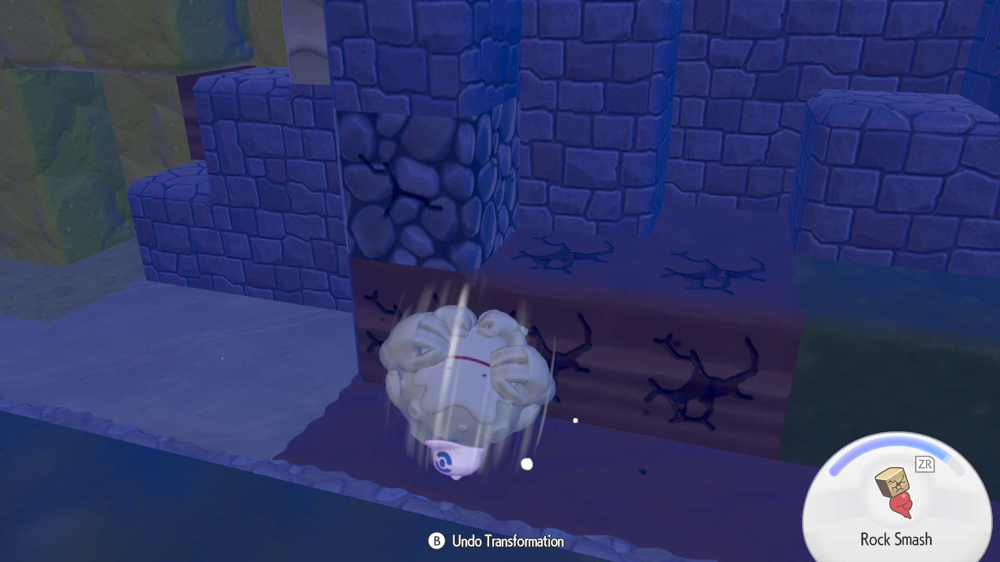
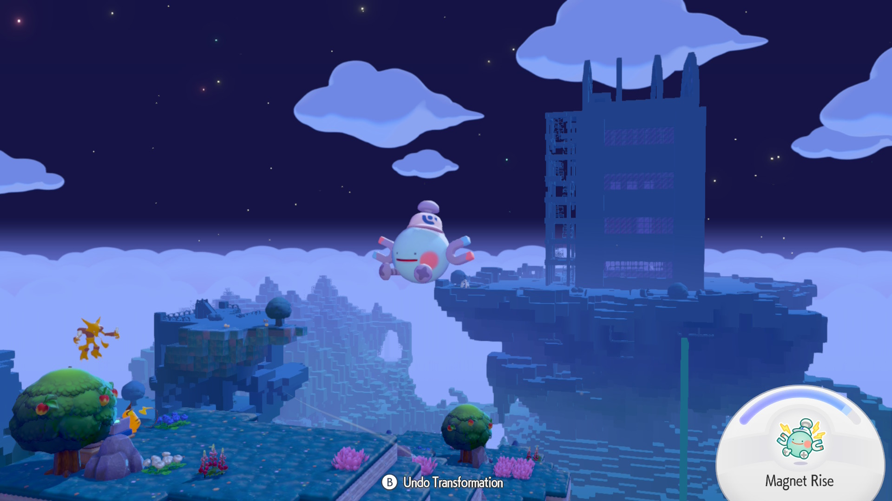
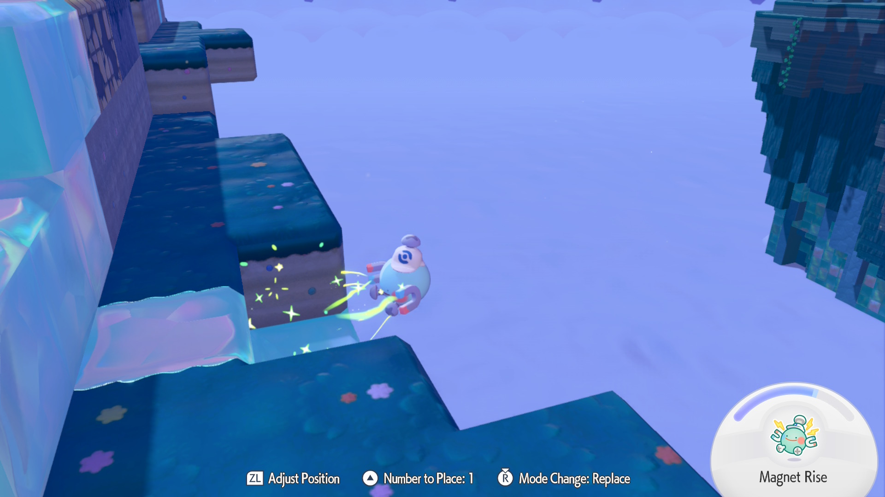

What is Rollout Used For?
Rollout is a move unlocked in the third town, Rocky Ridges, in Pokémon Pokopia. It is learned from Graveler during the request (INSERT NAME).
How To Use Rollout

What is Magnet Rise Used For?
Magnet Rise is a move unlocked in the post-game of Pokémon Pokopia. It is learned from Magnemite
How To Use Magnet Rise

